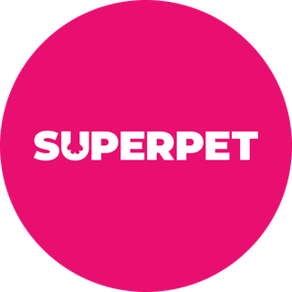

Инстаграм SUPERPET и LAIKY
Посты, карусели, сторис и обложки для хайлайтов двух брендов. Аккаунт переключается сверху. Нажмите на пост — карусель откроется и пролистается.
Аккаунты
{{handle}}
{{brandName}}{{bio}}

{{sTitle}}{{c.t}}{{vCount}}